Gallery
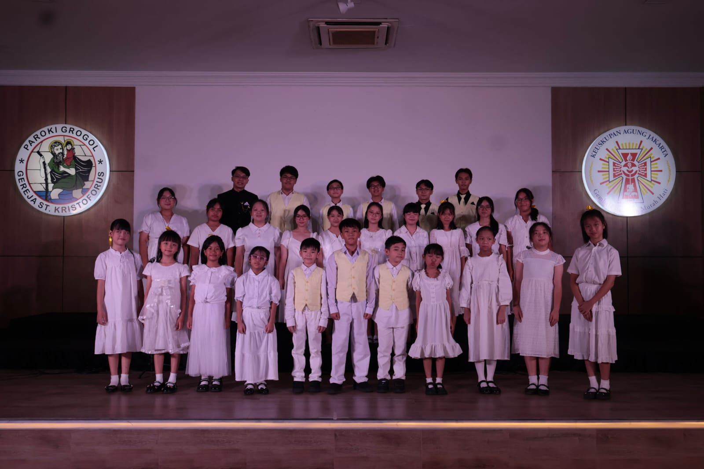
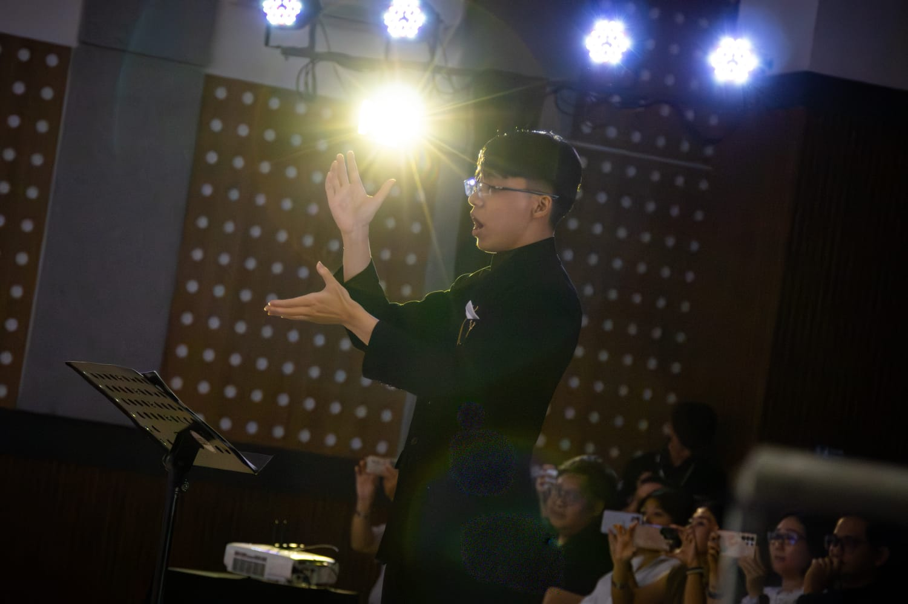
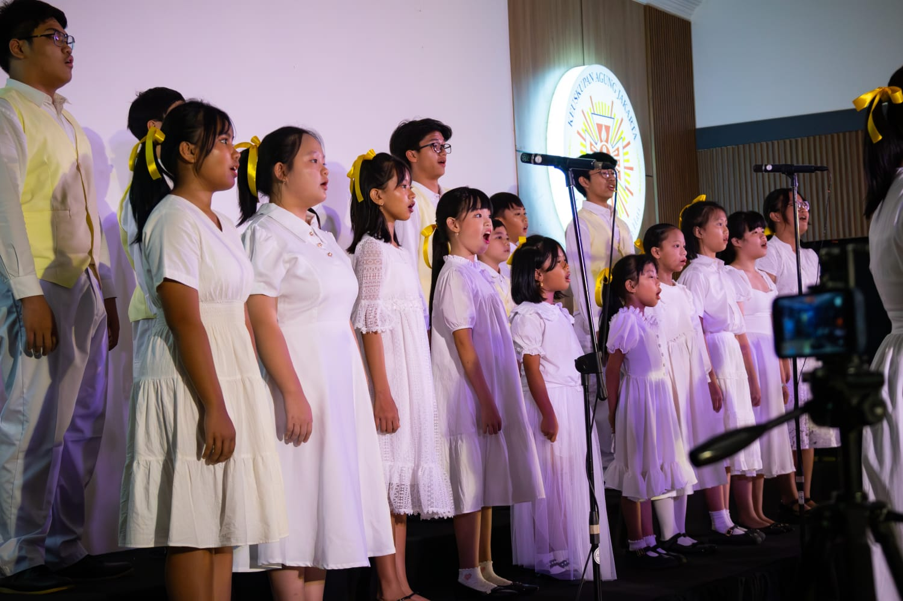
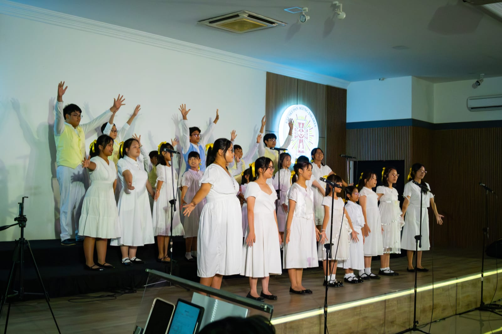
Video Performance
Kegiatan & Penampilan
Pelayanan di Gereja
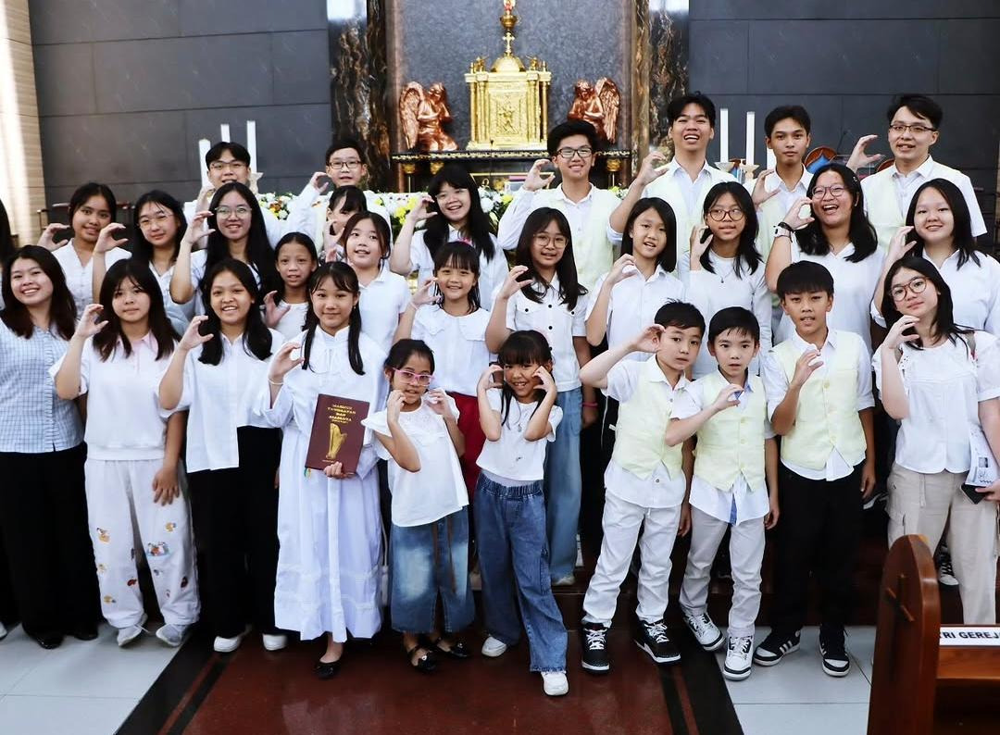
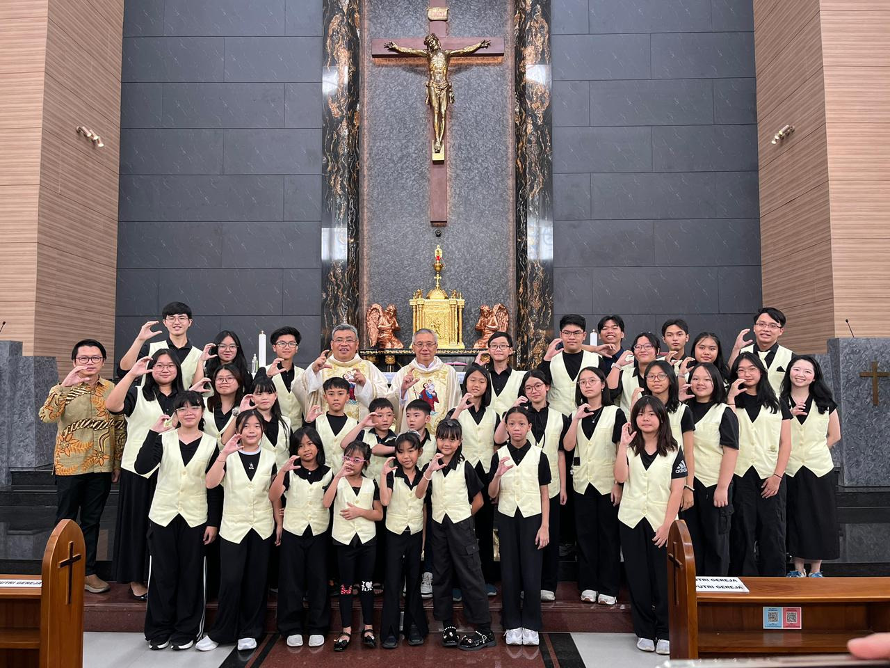
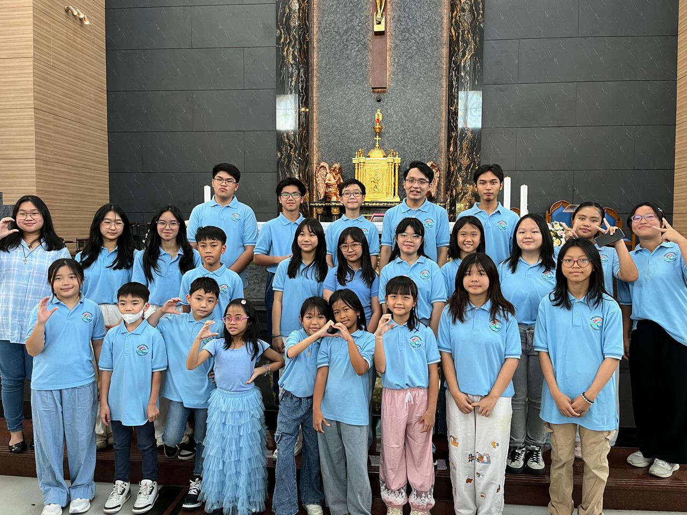
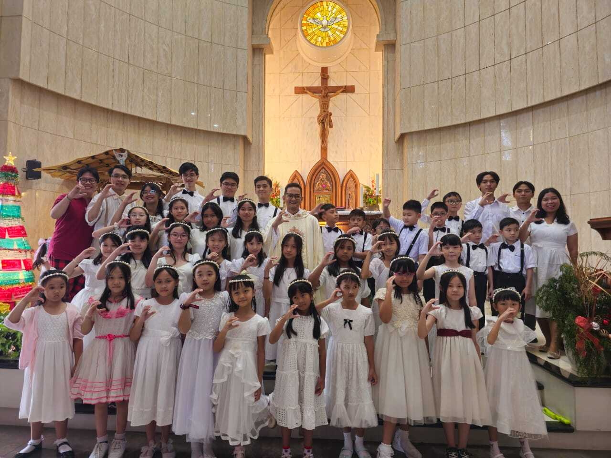
Pelayanan rutin dalam liturgi sebagai bentuk pengabdian dan pembinaan iman melalui musik.
Christmas Caroling @ Hublife Mall
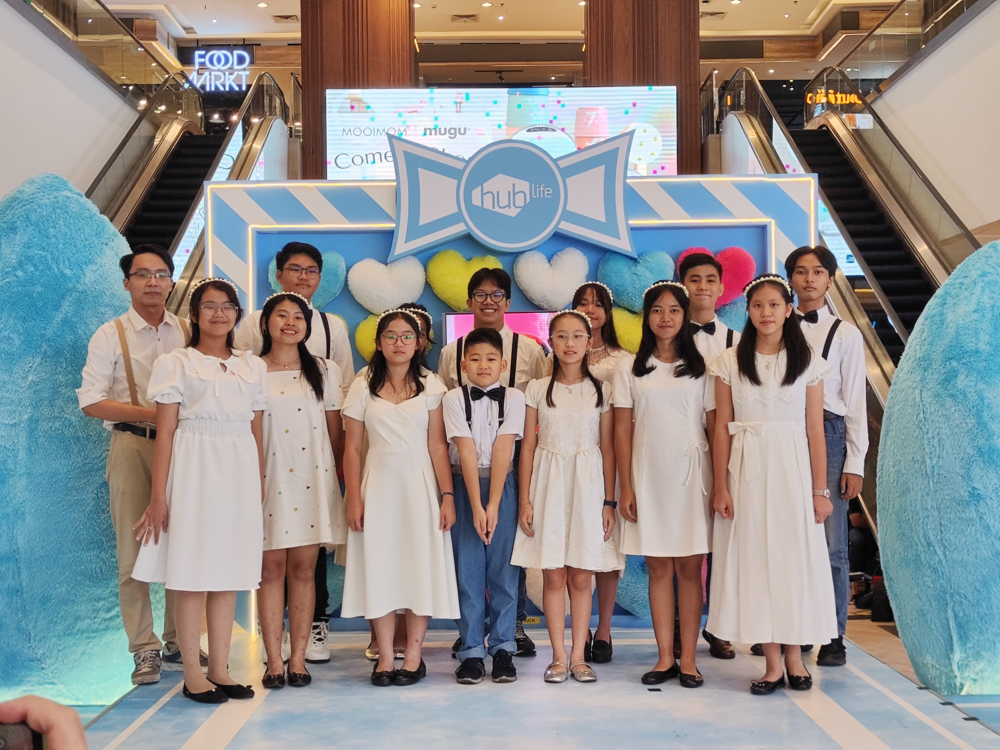
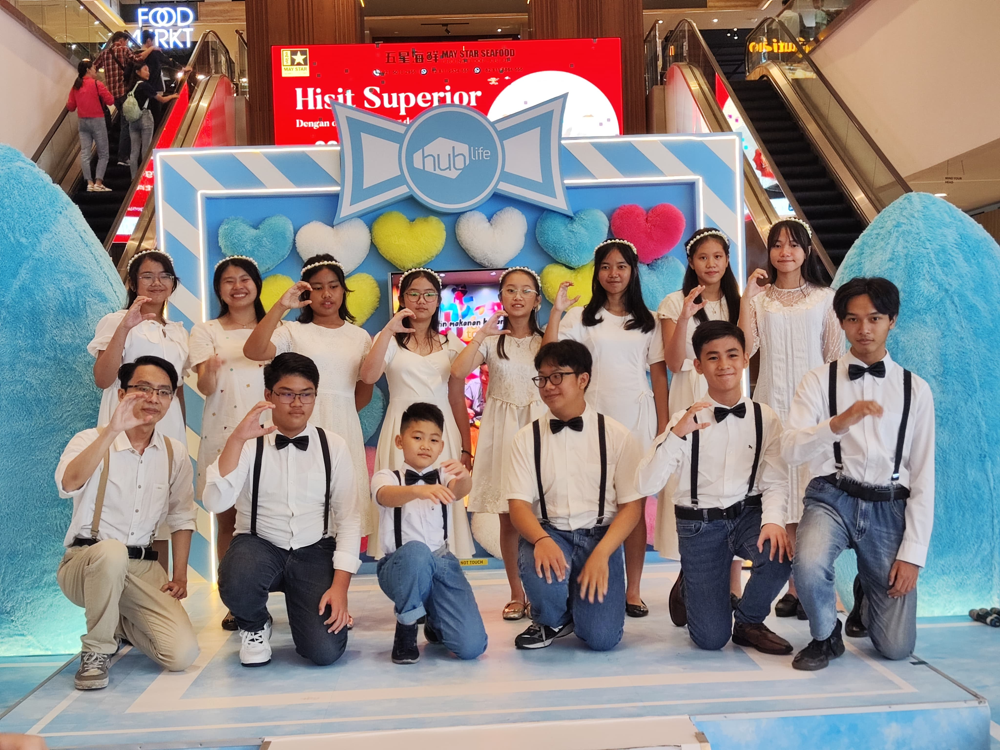
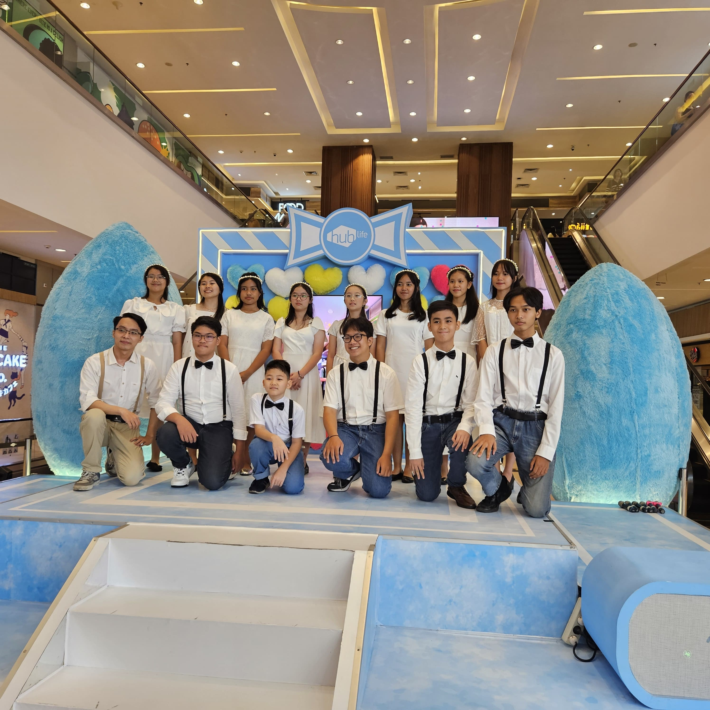
Penampilan dalam rangka perayaan Natal yang membawa sukacita bagi masyarakat luas.
Voice In Praise Concert

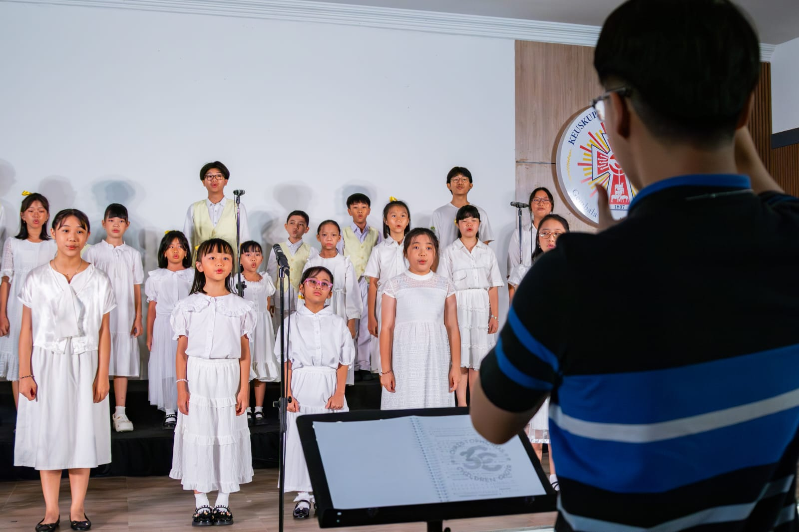
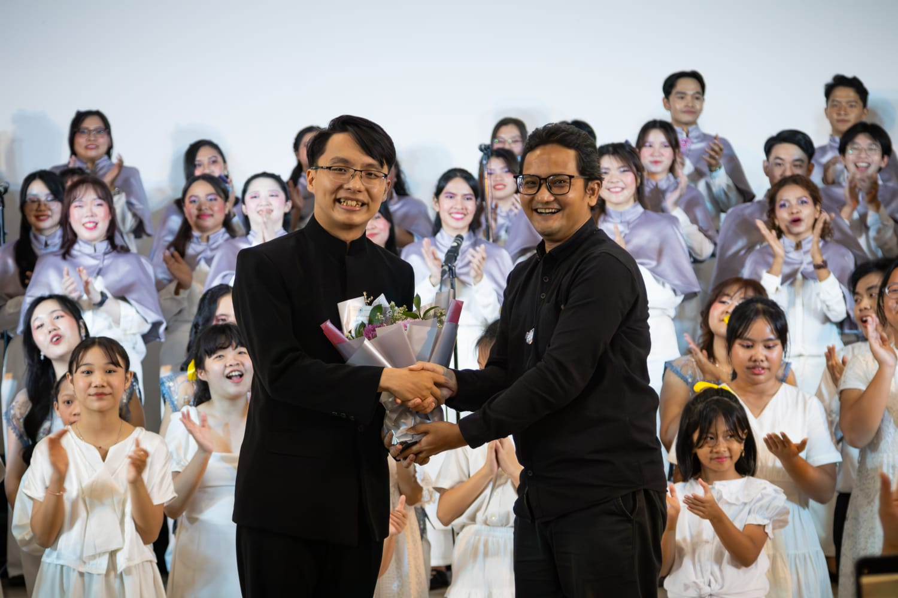
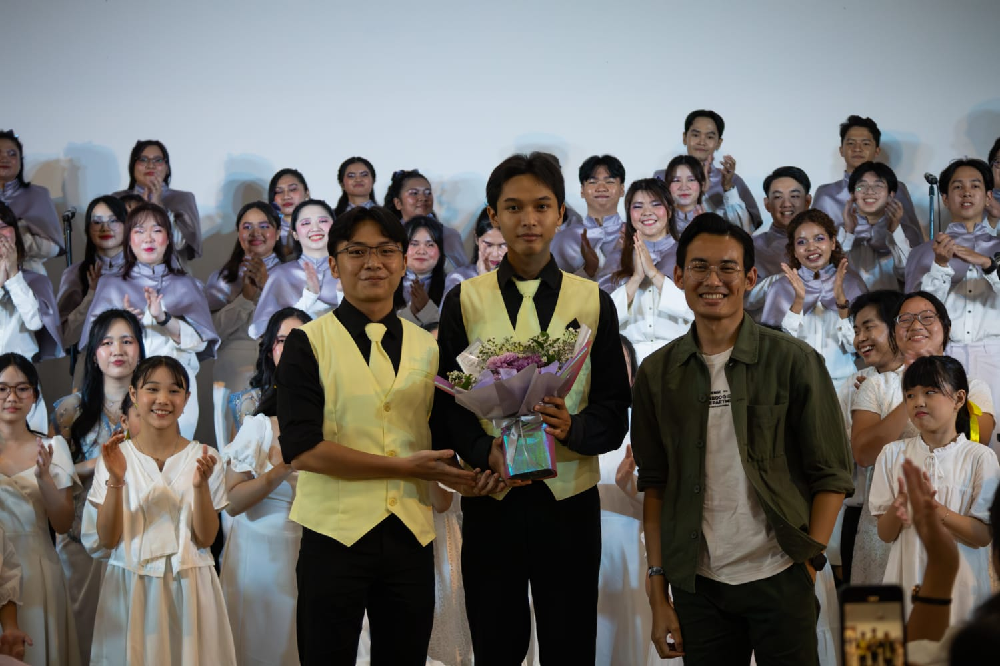
Konser paduan suara yang menampilkan kemampuan musikal dan kekompakan anggota choir.